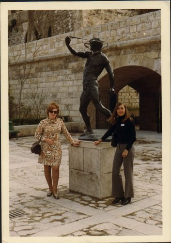
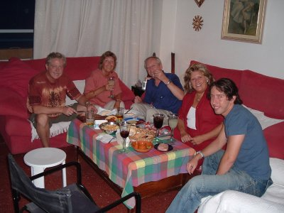
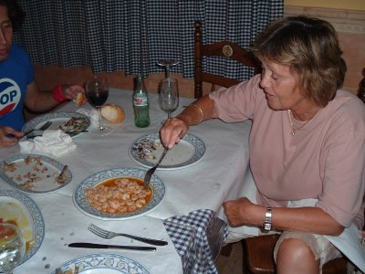
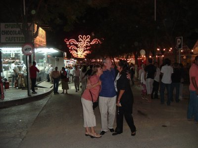
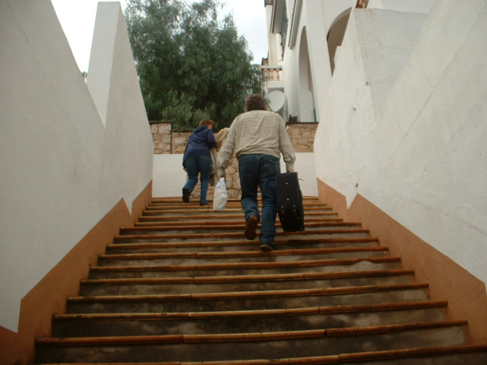
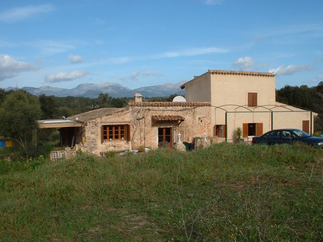
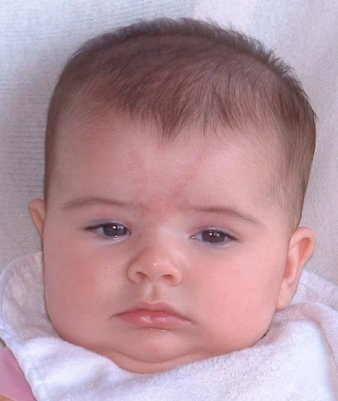

| c1970 Visiting Mallorca in the early days | |
|---|---|
|  |
Near the Cathedral in Palma |
| September 2004 - A Very Special Treat | |
|---|---|
|  |
Seville (en español - Sevilla) |
|
 Anyway,
we travelled Air Berlin. Very efficient, as you would expect. The
attractive fraulines had their smiles fixed on their faces I noticed.
We were met at the Airport by Romancho, Marcelo's brother, and we
collected a little fiat uno and followed Romancho for a ten minute
drive to his home in Tomares. We were welomed first, by a silly old
dog called Tuco, and then with hugs and kisses all round by Cristina,
Romancho's wife. They, like the rest of the family earn their living
by singing, and that evening had a regular weekly gig in Ayamonte,
some two hours drive, 140 kms, right down to the Portuguese border
near Faro. Marcelo and I helped load the wagon up with amplification
and set off for the venue. It was a very large new hotel complex with
every possible amenity. We helped set up the gear and Romancho
suggested Alex took us to the fishing village to get a meal, and that
we return for the second set. The meal was a never ending succession
of seafood. One can't describe the excellence of it all, an oval
platter of sliced tomatoes and chopped garlic, a bowl full of little
sea shells which had been boiled in, at a guess white wine. Little
shrimps in wine, squids, whitebait thingies, prawns in garlic, a
large dish of sardines, then cuttlefish. (sopia). Excellent dry white
wine and fresh crusty bread |
|
 We left for the venue, which was al fresco, and there were a few people listening. Cristina then sang a song which I knew was just for me, and we had a drink (a 103 for me) and heard the end of the session which was Mambo No 5!, helped pack the gear away and return to Tomares. Once home we had a coffee and another drink and sat talking for a while, as you do. It was pretty late by that time and it had been a long day. I had thought I was going to Can Pic to the beach remember! Then they said you had better slip your shoes on as we are going down to the feria in the village. Well! If you hadn't seen it with your own eyes you wouldn't have believed it. 3,00 am. The main street was in full swing with candy floss, ice creams, music. Every family had their own reception tent and drinks were offered everywhere. Everyone knew everyone else. I was introduced to so many people I didn't know whether I was coming or going. In the picture I was being introduced to Susannah |
| Numero 44 | |
|---|---|
|  |
The Long Climb
|
| The New House | |
|---|---|
|  |
About 35km from Palma
|
| September 2006 - Baby Aysha | |
|---|---|
|  |
Aysha at 4 months old |
| Miss Aysha! - September 2007 | |
|---|---|
|
|
Aysha is now 16 months oldOne disappointment for Val. - She was hoping to have Aysha speak English indoors and Spanish while out. - First signs are that it will be Spanish! "-Mas!" + "Esta!" + "PaPa". She has also developed an inbetween language entirely of her own making To see other pictures from that week's holiday for John and I, visit the photo album, and don't forget to add a little note to my guestbook. I find the bits other people have written better than the site itself!! |